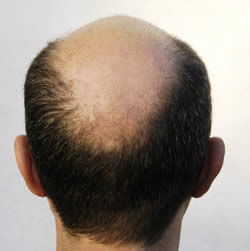

ဆံပင္ ကၽြတ္ ျခင္း


၁။ ေခါင္း ကို အုန္း ႏုရည္ ျဖင့္ ျဖစ ႏိုင္ လွ်င္ အပတ္ တိုင္း ေလွ်ာ္ ေပးပါ။
၂။ အုန္း သီး၊ ႏြားႏို႔တို႔ႏွင့္ ေခါင္း ေလွ်ာ္ ပါ။ ဆံပင္ ကၽြတ္ သူမ်ားအတြက္ ထုတ္ လုပ္ ထား ေသာ အုန္း သီး၊ႏြားႏို႔ သို႔ ႏွစ္ မ်ိဳးေပါင္း ေခါင္း ေလွ်ာ္ ရည္ ကိုသာ သံုးပါ။
မည္ သည့္ ဆံပင္ မ်ိဳးမဆို
၃။ ဆီလိမ္း ေပးပါ။ သင့္ ဆံပင္ ႏွင့္ ဦး ေရရဲ႕ အစိုဓာတ္ ကို ထိန္း ေပးရံုသာမက ေပ်ာ့ ေဆးကဲ့သို႔ ဓာတုဓာတ္ မ်ားမပါဝင္ သျဖင့္ ဓာတ္ မတည့္ ျခင္း၊ ဦး ေရထိခိုက္ ျခင္း မျဖစ္ ႏိုင္ ပါ။
၄။ ဗီတာမင္ ေအ၊အီးတို႔က ဆံပင္ က်န္း မာသန္ စြမ္း ျခင္း ကို အေထာက္ အကူျပဳလို႔ ပံုမွန္ စားသံုးပါ။
၅။ ေရမ်ားမ်ား ေသာက္ ပါ။
၆။ တတ္ ႏိုင္ ရင္ ဓာတုဓာတ္ မ်ားပါဝင္ တဲ့ ေခါင္း ေလွ်ာ္ ရည္ မ်ားအစား သဘာဝ ေခါင္း ေလွ်ာ္ ရည္ ကိုသာ သံုးပါ။
၇။ ဆံပင ္ေျဖာင့္ ျခင္း၊ ေကာက္ ျခင္း၊ ဖေယာင္း သြင္း ျခင္း တို႔ကို မၾကာခဏ ျပဳလုပ္ ျခင္း ကို ေရွာင္ ၾကည္ ပါ။
၈။ ျဖစ္ ႏိုင္ လွ်င္ ကိုယ္ တိုင္ ျပဳလုပ္ သံုးစြဲပါ။ ျပဳလုပ္ နည္း မ်ားကို ထည့္ သြင္း ေဖာ္ ျပထားပါတယ္။